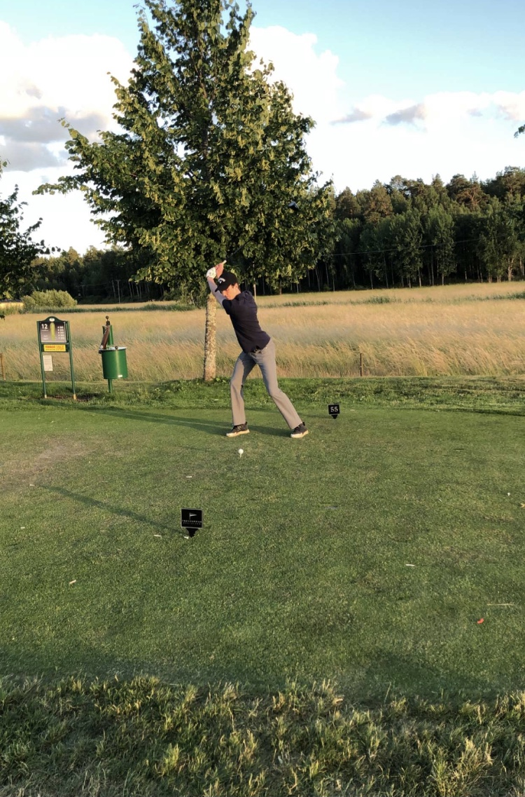

Sporter
Jag har alltid varit väldigt aktiv inom sport. Som liten gick jag på lite alla möjliga aktiviteter men fastnade mest för hockey, fotboll och golf. Fotboll har dock alltid varit min favorit sport som jag spelade i cirka 10 år men slutade för ett år sedan. Just då spelade jag i klubben AIK vilket också är mitt favoritlag som ni kanske redan sett. Innan AIK så spelade jag i Skå ik på ekerö där jag växte upp. Hockey spelade jag i cirka 6-7 år men slutade för 2 år sedan. Där spelade jag mestadels också i Skå ik men också i Ekerö ik. Alltså går jag inte i någon lagsport för tillfället då det inte fanns någon tid för skola då jag hade cirka 1-2 dagar ledigt i veckan. Därför spelar jag nu väldigt mycket golf istället samt går på gymmet när jag hinner. Golf började jag spela för 4-5 år sedan men har inte spelat så mycket då jag haft fotbollen och hockeyn i fokus. Men nu när jag slutat på de sporterna har jag haft mycket tid till att spela golf. Jag är medlem på Troxhammar golfklubb som ligger väldigt nära där min pappa bor alltså på Ekerö. Jag ligger just nu på 15,7 i handikap men känner att jag skulle kunna ligga ännu lägre om jag hade hunnit spela lite mer nu på sistonde. Men då skolan har börjat är det svårt då jag spelade väldigt mycket under sommaren. Dock så är jag med i en träningsgrupp på Troxhammar där vi har träningar varje tisdag och torsdag.
Favorit musik

Jag är ett stort fan av musik. Innan NTI så gick jag på en musikskola
tillsamans med Barre. Det har lett till att jag lärt mig att spela
flera olika instrument men mina huvudinstrument är piano och trummor.
min musiksmak är nog lite speciell då man inte tror att någon i min
ålder lyssnar på äldre musik. Nästan allt jag lyssnar på är ifrån
60-00 tal då jag anser att det var då musikbranschen var på topp. Mina
favorit band just nu är The Eagles och Dire Straits vilket är två
ganska rockiga band vilket är min favorit genre. Om ni har spotify så
kan ni gärna gå in på min och mina kompisars spellista Boysen som har
cirka 500 låtar med allt från himmel till jord.
Länk till Boysen
Favorit snus
Jag har snusat det mesta och har då såklart hittat några favoriter. Själv skulle jag kalla mig en generalperson då jag tycker de gör det godaste snuset. Där har jag general XR strong och ONE som favoriter. Dock så kan man också lyxa till det lite ibland medlem en ettan och grov om man känner för det. Dessutom har jag inte någon speciel typ av snus som favorit jag kör både orginal white och lös. Men white är att föredra eftersom att der är smidigt att ha i skolan.